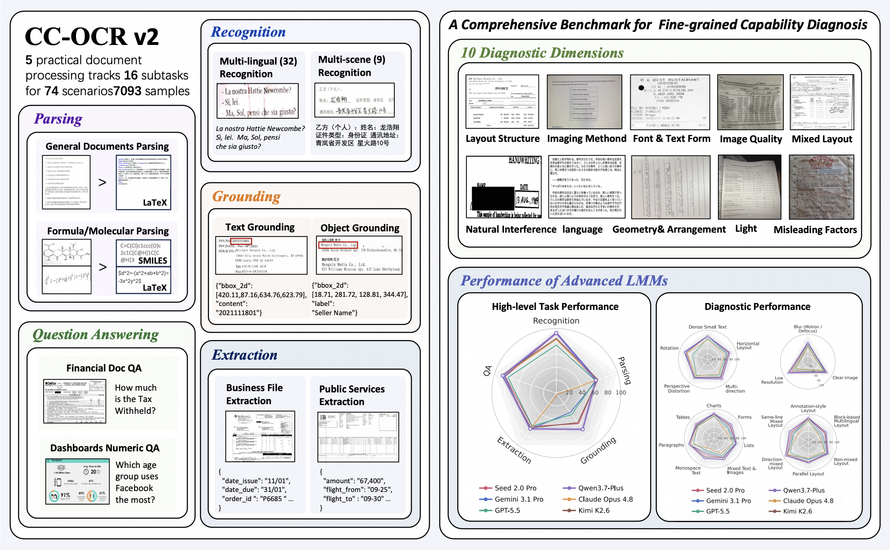
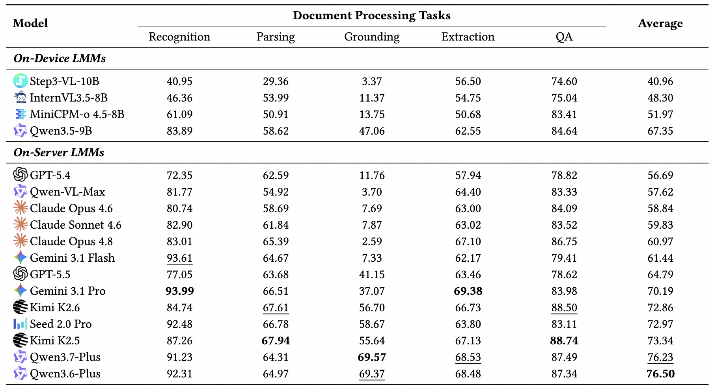
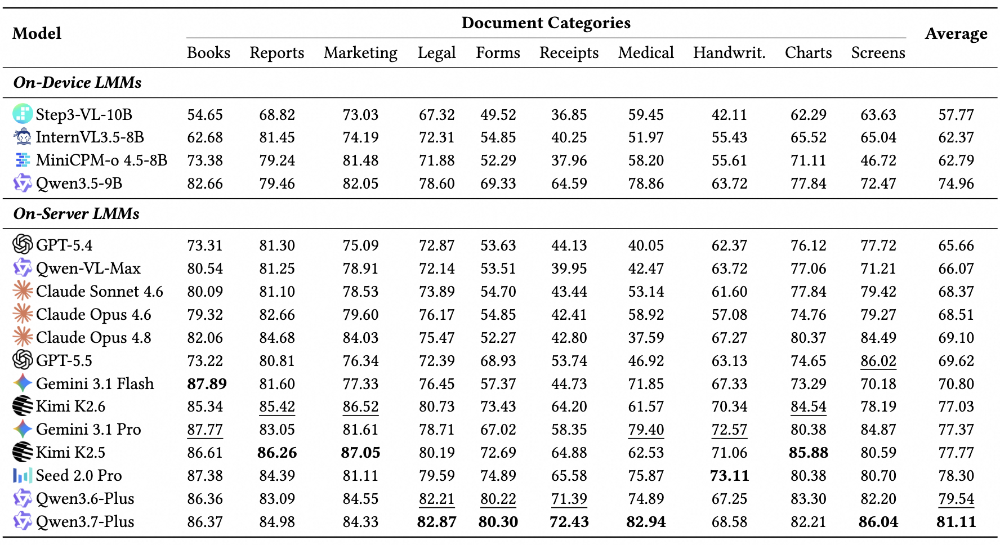

CC-OCR V2:Fine-Grained Attribution of LMM Failures
in Real-World Visual Document Understanding
1Northeastern University2Alibaba Group3Qwen Team, Alibaba Group4Tsinghua University

Introduction
CC-OCR V2 evaluates large multimodal models on five real-world document tasks: recognition, parsing, grounding, key information extraction, and question answering. It contains 7,093 samples across 16 subtasks, 74 application scenarios, and ten document categories, with 32 languages in the recognition suite. Sample-level annotations along ten diagnostic dimensions help identify how layout, image quality, geometry, and other document conditions contribute to model failures.
Task coverage and document categories
| Track | Evaluation scope |
|---|---|
| Text Recognition | Multilingual recognition (32 languages) and natural-scene recognition (nine subsets). |
| Document Parsing | General document parsing, formula recognition, and molecular structure parsing. |
| Document Grounding | Text and object localization within document images. |
| Key Information Extraction | Structured field extraction from business, public-service, and regulated documents. |
| Document Question Answering | Questions grounded in financial documents and numerical dashboards. |
Document categories
The benchmark spans Books & Academic, Reports & Memos, Marketing & Editorial, Legal & Public Notices, Forms & Personal Records, Receipts & Transactions, Certificates & Medical, Handwritten Pages, Charts & Diagrams, and Labels & Screens.
Leaderboard
Results across five document-processing tasks and ten document categories.
| Loading scores… |
Bold: best · Underlined: second-best in the selected model group. Select a column heading to sort; scroll for all results.
Representative model results · original repository figures


Fine-Grained Diagnosis
Explore performance across ten diagnostic dimensions, from document structure to visual interference.
Layout Structure
Tables, forms, paragraphs, lists, and other content structures.

- Seed 2.0 Pro
- Gemini 3.1 Pro
- GPT-5.5
- Qwen3.7-Plus
- Claude Opus 4.8
- Kimi K2.6
Dataset Examples
Sample images, task prompts, and reference answers from the five evaluation tracks.
Text on crumpled paper
Transcribe printed text despite folds, perspective distortion, and pen marks.
Prompt
Please output only the text content from the image without any additional descriptions or formatting.
Reference answer (excerpt)
ran ran gentle careful winter read mirror chance map but sighed wrote sudden ink dangerous everything someone dim something! after sharp noticed almost simple Noah library asked door ticket dusty laughed thunder... letter the until mirror hid stairs never strange room nearby and library winter someone Clara choice. opened the or wind asked while read read…
Sample 86307ef9eb94 · Original image and annotation from the CC-OCR V2 dataset.
BibTeX
@article{peng2026cc,
title={CC-OCR V2: Fine-Grained Attribution of LMM Failures in Real-World Visual Document Understanding},
author={Peng, Chunyi and Xu, Zhipeng and Xiong, Yuqi and Chen, Zulong and Ji, Junhao and Liu, Qing and Liu, Zhenghao and Qin, Zubao and Zhao, Bing and Wan, Jianqiang and others},
journal={arXiv e-prints},
pages={arXiv--2605},
year={2026}
}